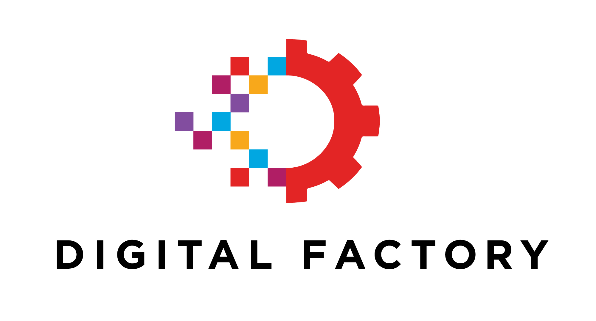

Tao Wang
170 Grandravine Dr, North York, ON M3J 1B5
(647) 550-6511 | taowang0622@gmail.com | https://taowang0622.github.io/ |
 |
February 1, 2018
Dear Sir or Madam,
I am applying for Summer Internship 2018 in Technology and Digital Banking. I have got a bachelor's degree in physics before and right now I am studying at York University for my second bachelor's degree in computer science. I attended Scotia Bank Tech Info Session at York University earlier ,and I am very interested in learning opportunities you can provide to interns, so I see this internship as the ideal opportunity for me to contribute knowledge and skills I gained from my experience and academic studies to enterprise product development.
I am enthusiastic and self-motivated. I am doing well academically with all grades to be A or A+, and at the same time I enroll in online courses on Coursera or other MOOC websites to keep up with new technologies and update my knowledge. By now I have finished 13 online courses. I consider myself as object-oriented. I like doing projects to polish my programming skills and internalize knowledge, and I usually keep optimizing and improving them up to higher performance. I like collaborating with other people. I joined Hackfest 2017 at York University during which we pitched ideas, brought them to life and ended up making a demo using AngularJS, Bootstrap and NodeJS. I have a good understanding of data structure and algorithm. With the help of the physics background, I can understand them well and quickly and adapt them to solve various problems.
My goal is to become a full stack developer, but now I mainly focus on back-end development with JAVA. I am an expert at back-end development with J2EE and Spring, good at front-end development using AngularJS and Bootstrap, have experience using SQL and NoSQL databases which are MySQL, MongoDB and Redis.
From June to December 2017 I worked as a teaching assistant at York University and the major duty was helping students finish their lab assignments. During work, I instructed them to find out solutions and bugs by themselves by using knowledge they learned from lectures and teaching them debugging techniques and how to use debugging tools. I interned at Lokafy, a startup aiming to connect travelers with locals, from March to May 2017. During that internship, I collaborated with other team members to redesign the website and rewrite the front-end code mainly using AngularJS and Bootstrap to make the front-end code more maintainable and readable.
I believe I can be a valuable asset to your company. Thank you for your time and consideration. I hope to hear back from you soon.
Sincerely yours
Tao Wang